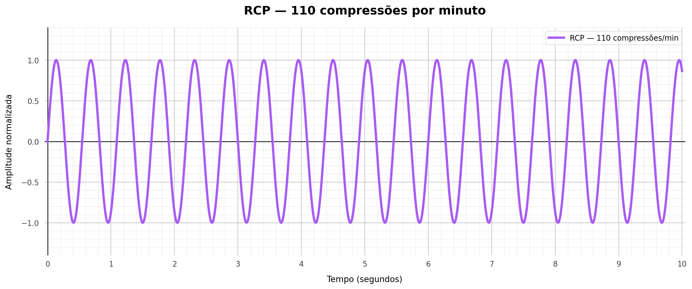
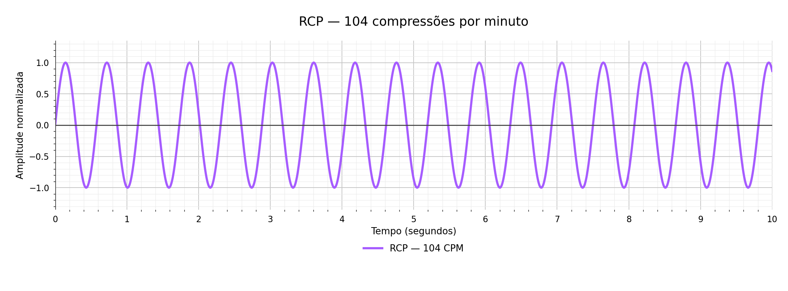
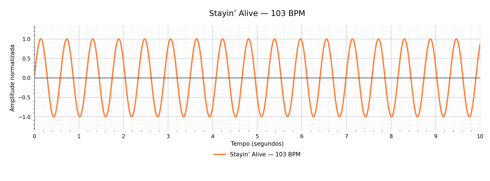
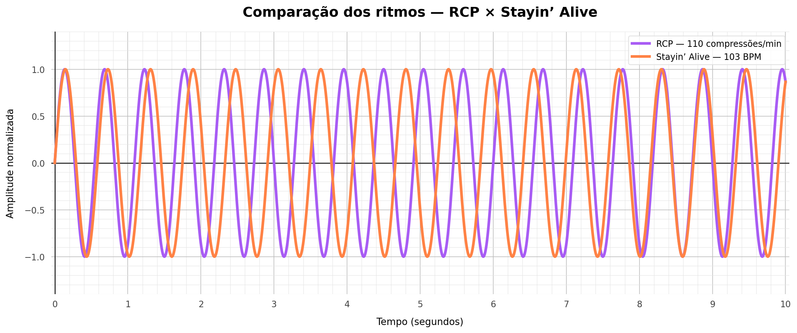
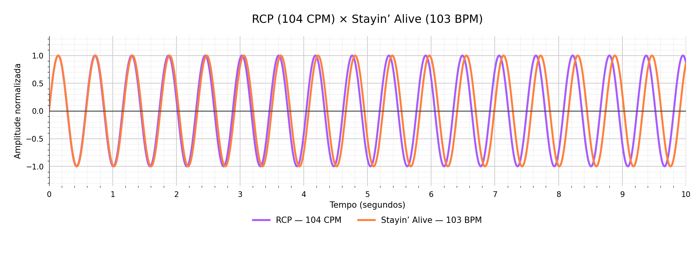
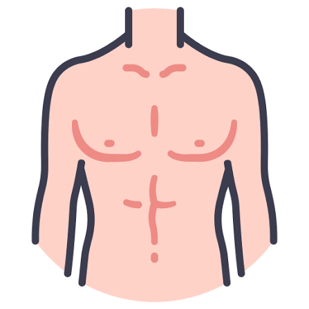

RCP com 110 compressões por minuto
Considerando uma frequência de 110 compressões por minuto, dentro do intervalo recomendado para uma RCP em adultos. Temos:
F = 110 ÷ 60 ≈ 1,8333 Hz
R₁(x) = sen((11π/3) · x)

Levando em consideração que uma função seno pode ser representada por uma ondulação no plano cartesiano, podemos dizer então que os valores respectivos de cada crista e vale, seguem uma certa lógica expressada por essa função e acabam por ter uma frequência. Dessa forma, podendo se observar algumas características como amplitude, período e frequência
Existem muitas situações no dia a dia em que a frequência de uma determinada ação pode salvar uma vida, é o caso da RCP (Ressuscitação Cardiopulmonar ou Reanimação Cardiorrespiratória), técnica utilizada para manter o fluxo de sangue e oxigênio para o cérebro e órgãos vitais durante uma parada cardíaca, tal manobra deve ser realizada em adultos sobre o centro do tórax, em ritmo rápido e constante de 100 a 120 compressões por minuto.
Curiosamente, a música Stayin' Alive, dos Bee Gees, segue uma frequência de batidas muito próxima a frequência de compressão ideal para uma RCP, no caso, cerca de 103 BPM (batidas por minuto).
Utilizando a função seno, podemos construir e representar tanto a frequência de batidas da música quanto a frequência de compressões por minutos e compará-las lado a lado.
A função seno pode ser escrita como: f(x) = A · sen(2π · F · x), A representa a amplitude, F é a frequência em hertz e x representa o tempo em segundos. Para simplificar a demonstração, iremos definir amplitude igual a 1.
O 2π corresponde a uma volta completa no círculo trigonométrico, equivalente a 360° ou 2π radianos. Assim, a frequência determina quantas voltas a onda completa a cada segundo.
Para converter compressões ou batidas por minuto em hertz, basta dividir o valor por 60, assim podemos construir as funções e seus respectivos gráficos.
Como a frequência de compressões por minuto é de 100 a 120, vamos utilizar dois valores diferentes para exemplificar nos gráficos, no caso sendo 110 e 104, e mostrar o quão próximo do ideal a frequência de batidas da música dos Bee Gees segue ao padrão recomendado.
Considerando uma frequência de 110 compressões por minuto, dentro do intervalo recomendado para uma RCP em adultos. Temos:
F = 110 ÷ 60 ≈ 1,8333 Hz
R₁(x) = sen((11π/3) · x)

Agora com frequência de 103 compressões por minuto, mantendo a frequência dentro do intervalo recomendado. Temos:
F = 104 ÷ 60 ≈ 1,7333 Hz
R₂(x) = sen((52π/15) · x)

A música possui aproximadamente 103 batidas por minuto, então usando a mesma lógica, podemos representar seu ritmo por outra função seno:
F = 103 ÷ 60 ≈ 1,7167 Hz
M(x) = sen((103π/30) · x)

Agora com os devidos gráficos apresentados, podemos comparar e ver o quão próximas suas frequências são.
Primeiramente RCP 110 compressões x Música:

Ao sobrepor os gráficos, podemos notar que, em certo ponto, as ondas começam a se afastar e, posteriormente, voltam a se sobrepor. Isso acontece devido à diferença de 7 ciclos por minuto entre suas frequências. Tal diferença não quer dizer que uma está certa e a outra errada, mas mostra como uma pequena alteração na frequência pode causar uma diferença perceptível ao longo do tempo.
Aproximando um pouco mais a frequência de ambos os eventos, podemos notar que esse afastamento das ondas ainda ocorre, mas mostra o quão próxima da taxa de compressão o ritmo da música se aproxima.

Depois de observar gráficos e funções, talvez para alguns ainda não esteja visível o suficiente em como essas frequências são próximas, então que tal experimentar isso na prática?
O game abaixo irá demonstrar ambos os eventos, tanto a RCP (melhor fazer direito para não matar o paciente) com o ritmo da música.
No exemplo, estaremos levando em conta que o ritmo da música é a taxa ideal para a RCP, sendo de 103 compressões por minuto, o que ainda se enquadra no ritmo ideal.
Espero que se divirta, e bom jogo. :)
obs.: caso o vídeo nao carregue, por favor recarregue a página limpando o cache (ctrl + f5)

Compressões: 0
Pontuação: 0
Ideal: 103 BPM
Jogador: 0 BPM
Precisão: 0%